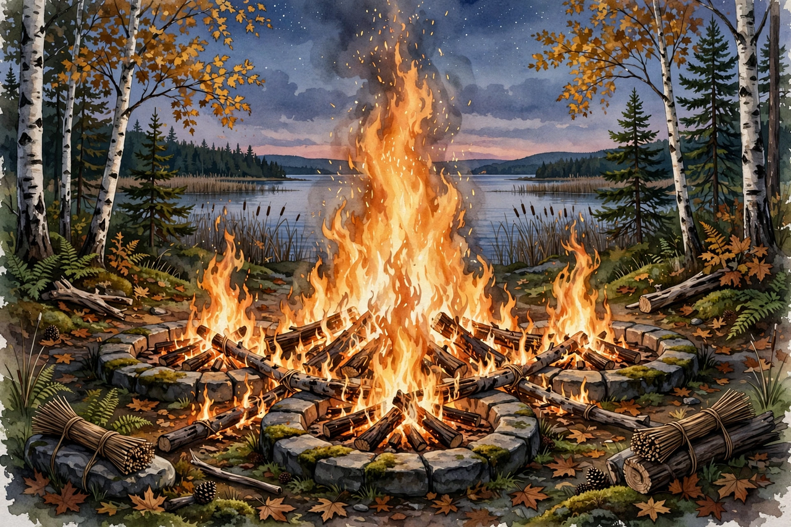

| Council of Three Fires | |
|---|---|
 The council fire of the Three Fires alliance | |
| Native name | Niswi-mishkodewinan (Anishinaabemowin) |
| Members | Ojibwe (Chippewa), Odawa (Ottawa), Potawatomi |
| Region | Great Lakes, North America |
| Languages | Anishinaabemowin (Algonquian) |
| Traditional centre | Michilimackinac |
The Council of Three Fires (in Anishinaabemowin: Niswi-mishkodewinan, "Three Fires Confederacy") is a long-standing Anishinaabe alliance of the Ojibwe, Odawa and Potawatomi peoples of the Great Lakes region of North America. For centuries the three nations maintained the alliance through kinship, trade, diplomacy and a shared council fire, traditionally kept at Michilimackinac at the straits between Lakes Huron and Michigan.
Within the alliance each nation held a recognised role, expressed in familial terms. The Ojibwe (Chippewa), the eldest brother, were the "keepers of the faith", responsible for the spiritual and ceremonial traditions of the alliance. The Odawa (Ottawa), the middle brother, were the "keepers of trade", renowned middlemen of the Great Lakes fur trade. The Potawatomi, the youngest brother, were the "keepers of the fire", charged with maintaining the council fire itself and, in war, often forming its fighting arm.
The three peoples speak closely related dialects of Anishinaabemowin and share the doodem (clan) system, Midewiwin ceremonial tradition and a common origin story of migration from the Atlantic coast — following the prophecy of the Seven Fires — to the Great Lakes, where "food grows on water" (wild rice).
The alliance predates European contact and became central to Great Lakes geopolitics during the fur trade era. The Three Fires peoples traded and negotiated with New France, then with Britain, and fought in the Beaver Wars, the French and Indian War and Pontiac's War (1763), in which Odawa leader Pontiac besieged Detroit. After American independence, the confederacy's western members formed a core of the Northwestern Confederacy resisting United States expansion, fighting at the Battle of Fallen Timbers (1794) and in the War of 1812 under leaders including Tecumseh's allies.
Nineteenth-century treaties with the United States fragmented the alliance's land base, and many Potawatomi were forcibly removed west of the Mississippi in the 1830s, while many Ojibwe and Odawa communities remained in Michigan, Wisconsin, Minnesota and Ontario. Despite removal and assimilation pressures, the member nations retain their identities today as federally recognised tribes in the United States and First Nations in Canada, and the Three Fires alliance continues to be affirmed in intertribal gatherings.